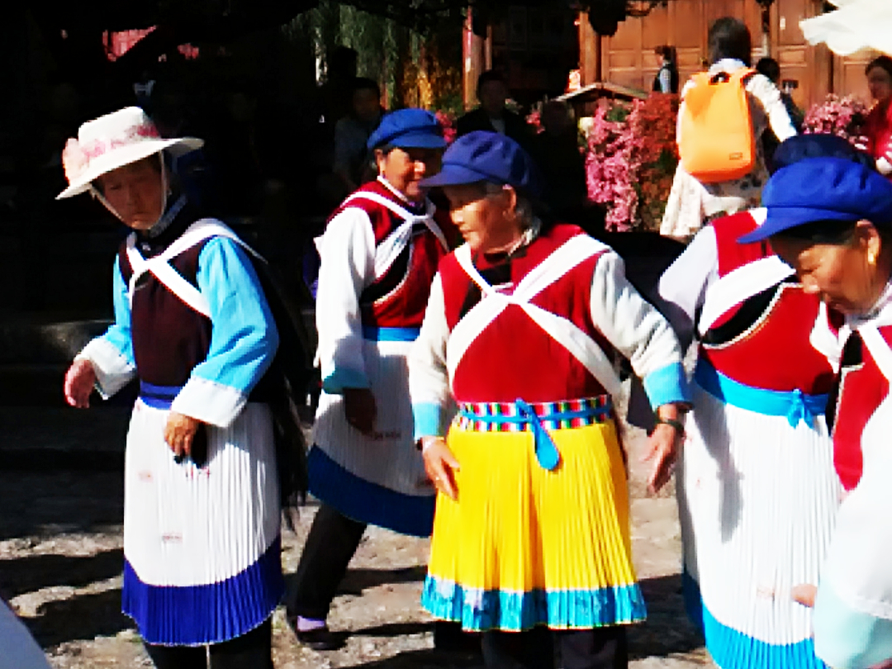
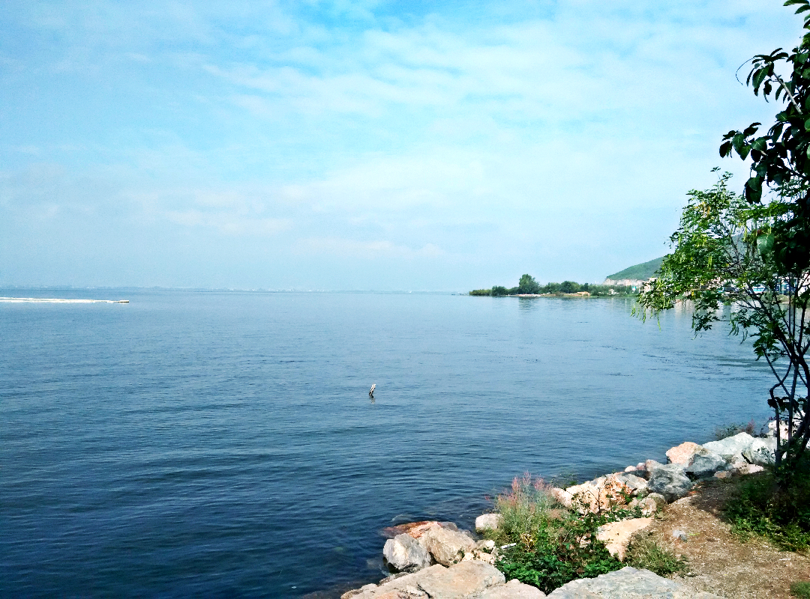

在2015年10月份，在学校的组织下，我们去云南写生。我们的旅行路线是-大理-香格里拉-丽江-昆明
- 四合五天井、
- 走马转阁楼；
- 家泉水绕诗咏，
- 户户垂扬入画图；
云南简称“滇”，战国时期，这里是滇族部落的生息之地。 云南，意即“彩云之南”，另一说法是因位于“云岭之南”而得名。古语云“一日长一丈，云南在天上”南，以其美丽、丰饶、神奇而著称于世，一向被外界称为“秘境”,吸引着世界各地的游客。
从’99世界园艺博览会举办地的省城昆明，到“风花雪月”的大理名胜；从高原水城丽江、神奇的“香格里拉”—中甸，到腾冲热海的“大滚锅”和火山，孔雀曼舞的西双版纳；从“天下第一奇观”的石林、千姿百态的元谋土林，到世所罕见的“三江并流”，江狭水凶的虎跳峡……这些迥然相异的山川景色，如一个天然的自然博物馆，每一位来到这里的游客，都会深深地感受到这是一块博大而充满激情、深邃而富有魅力的神奇之地。
« Back